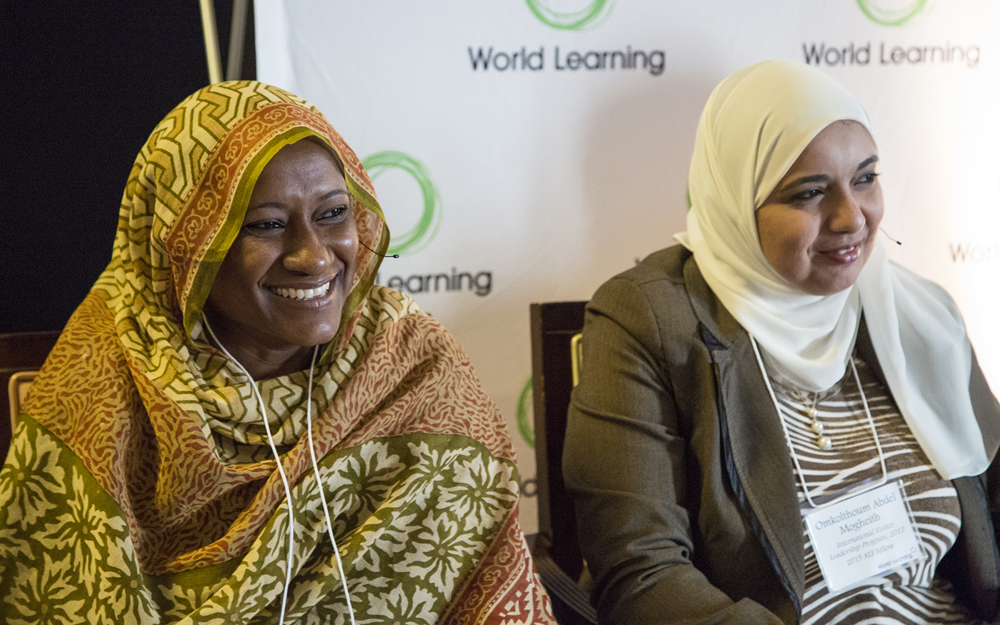
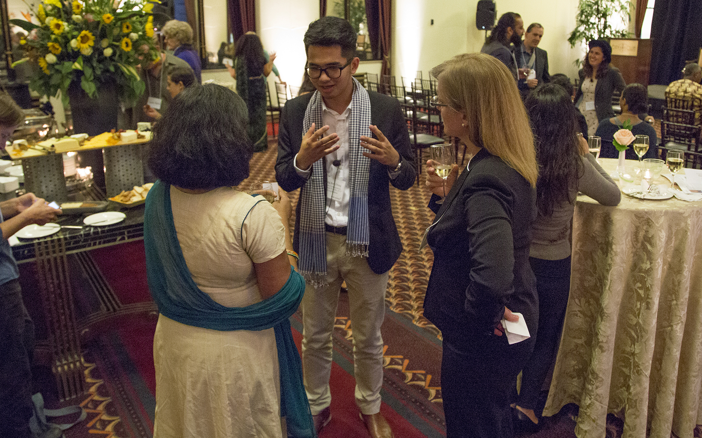
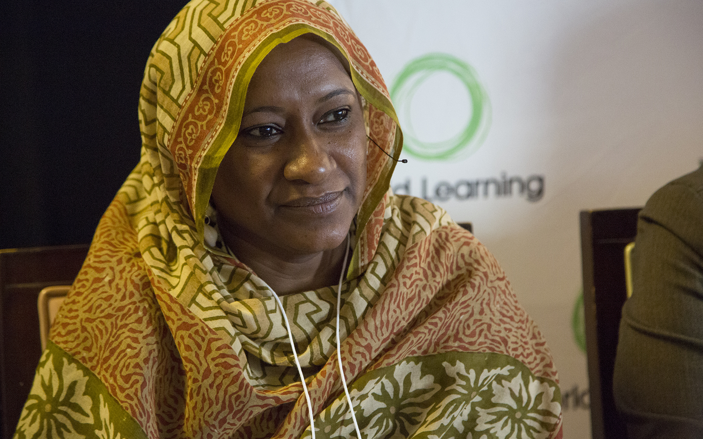
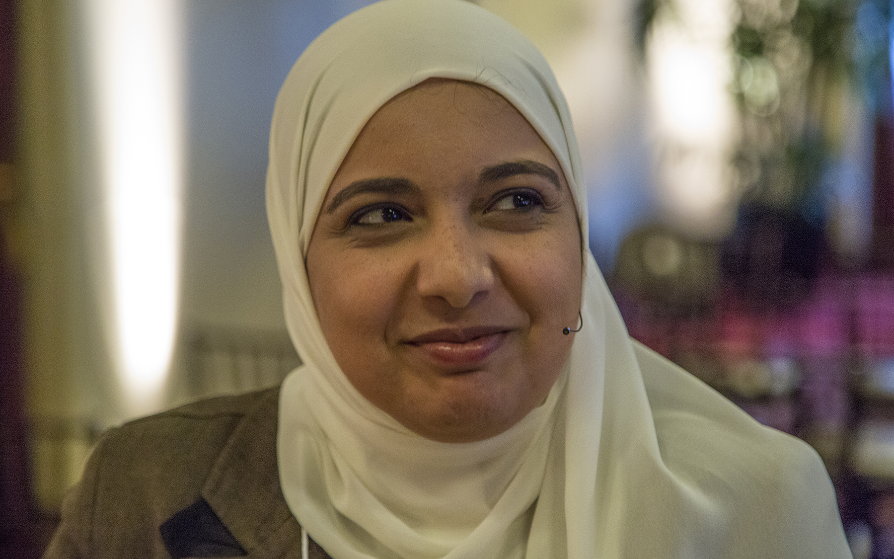
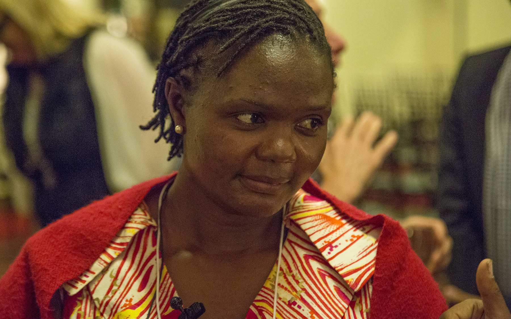
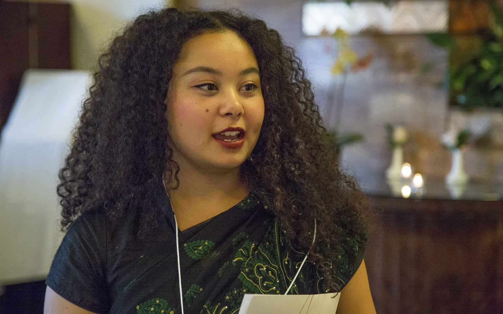
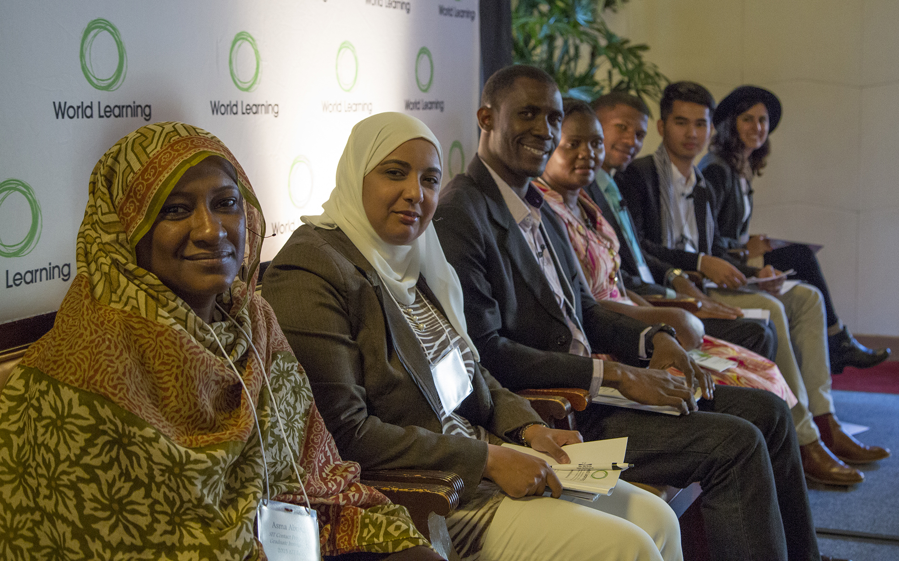
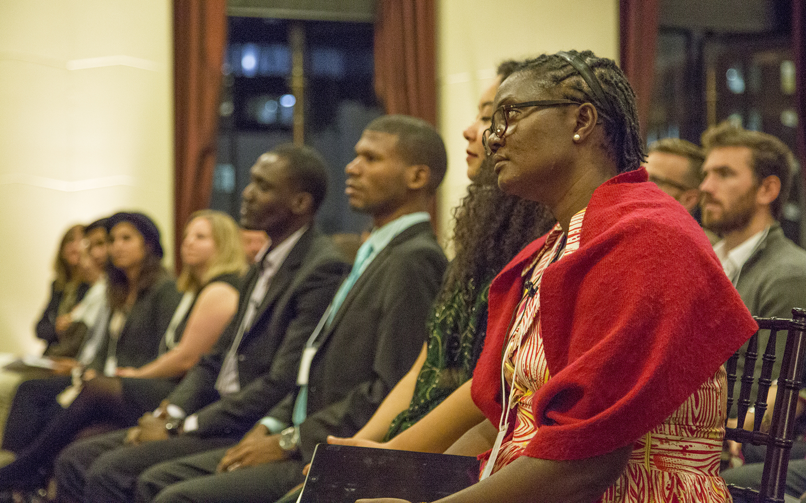
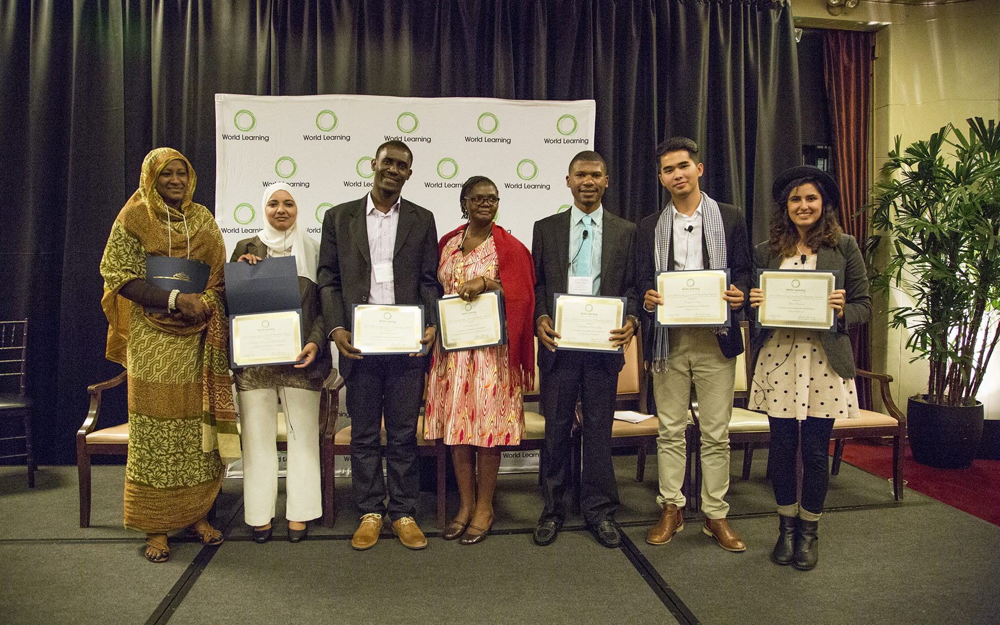

-

Advancing Leaders Fellowship
San Francisco | October 21, 2015
-

Changing the game
On October 21, World Learning honored this year's Advancing Leaders Fellows with an award ceremony in San Francisco. Each from a different country, the Fellows will return home to implement projects that will create more resilient, inclusive, and just communities.
-
Frank Michael Nunez
Youth Support Network seeks to prevent crime among teenagers in the Dominican Republic by training and educating parents on how to improve their parenting skills.
-

Asma Abunaib
Empowering Vulnerable Women in Sudan empowers women with disabilities and female owners of small businesses in Nyala and Khartoum by providing training on human rights education and advocacy.
-
Ping Ann Oung
Media & Ethics uses documentary films and educational workshops to raise awareness and minimize the harm of negative messaging in Cambodian media.
-

Omkolthoum Elsayed
Reaching You uses cutting-edge communications technology to develop the skills and performance of medical providers in underserved areas in Egypt.
-
Michelet Guerrier
Improving Teaching with Training and ICT addresses inadaquate educational resources and teacher training in rural Haiti by training teachers and administrators in information and communication technology (ICT).
-
Alexis Ramirez
Majestic Movers teaches middle school girls in Seattle about leadership, empowerment and social justice through hip hop dance and performance.
-

Charity Kabondo
Engaging Mentor Mothers for an HIV-free Generation prevents mother-to-child transmission of HIV in Malawi.
-

Imagine
Sneha Shrestha, a Nepali artist and former Advancing Leaders Fellow, had a key message for this year's Fellows: "I urge you to use your imagination and stay creative," said Shrestha, also known by her graffiti street name IMAGINE. "Because that is what brings about social innovation.”
-

Advancing Leaders
Open to alumni of World Learning programs, the Advancing Leaders Fellowship provides comprehensive training in project management and social innovation, as well as grants of up to $5,000 to bring transformative projects to life.
-
"A tidal wave"
In remarks introducing the Fellows, Donald Steinberg, World Learning President and CEO, recalled Robert Kennedy’s description of each act of service as “a tiny ripple of hope.” “These Fellows are going to be a tidal wave,” Steinberg said.
-

From personal to global
Many Fellows identified the roots of their projects in personal experiences. “Whenever things got difficult, I held onto the principles that I got from my parents,” Frank Nunez told the audience. “And it was those principles that kept me from making catastrophic mistakes."
- 